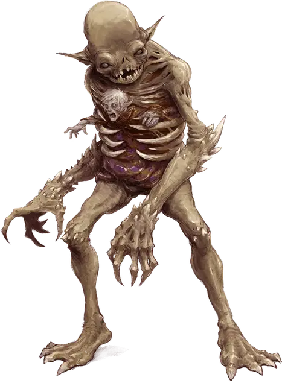

Пожиратель
Devourer
Большая Нежить, обычно хаотично-злая

Класс Доспеха 16 (природный доспех)
Хиты 189 (18к10 + 90)
Скорость 30 футов
| мод | спас | ||
|---|---|---|---|
| СИЛ | 20 | +5 | +5 |
| ЛОВ | 12 | +1 | +1 |
| ТЕЛ | 20 | +5 | +5 |
| мод | спас | ||
|---|---|---|---|
| ИНТ | 13 | +1 | +1 |
| МДР | 10 | +0 | +0 |
| ХАР | 16 | +3 | +3 |
Сопротивление урону огонь, холод, электричество
Иммунитет к урону яд
Иммунитет к состояниям отравление
Чувства тёмное зрение 120 футов, пассивное Восприятие 10
Языки Бездны, Телепатия 120 фт.
Опасность 13 (10000 опыта)
Бонус мастерства +5
Среда обитания Подземье
Особенности
Необычная природа. Пожиратель не нуждается в воздухе, питье, еде и сне.
Действия
Мультиатака. Пожиратель совершает две атаки Когтями и может использовать Заточение или Разрыв душ, если он доступен.
Когти. . Рукопашная атака оружием: +10 к попаданию, досягаемость 5 футов, одна цель. Попадание: 12 (2к6 + 5) рубящего урона плюс 21 (6к6) урона некротической энергией.
Заточение души. Пожиратель выбирает живого гуманоида с 0 хитов, которого он может видеть, и не далее 30 футов от себя. Существо телепортируется внутрь грудной клетки пожирателя и заточается в ней. Заточенное таким образом существо получает помеху на спасброски от смерти. Если оно умирает будучи заточенным, то пожиратель восстанавливает 25 хитов, сразу же перезаряжается Разрыв Душ и получает дополнительное действие на свой следующий ход. Кроме того, в начале его следующего хода пожиратель извергает убитое существо бонусным действием и оно становится нежитью. Если у жертвы было 2 или менее Кости Хитов, то она становится зомби [zombie]. Если у неё было от 3 до 5 Костей Хитов, то она становится упырём [ghoul]. В любом другом случае она становится умертвием [wight]. Пожиратель может заточать одновременно лишь одно существо.
Разрыв душ (Перезарядка 6). Пожиратель создает воронку энергии, высасывающей жизнь, с радиусом в 20 футов и центром в себе. Каждый гуманоид в этой области должен совершить спасбросок Телосложения Сл 18 и получить 44 (8к10) урона некротической энергией при провале или половину этого урона при успехе. Увеличьте урон на 10 за каждого живого гуманоида с 0 хитов в этой области.
Описание
Из всех выпущенных на волю исчадий Оркуса, пожирателей боятся больше всего. Эти высокие, похожие на мумий изверги, которые бродят по планам, пожирая души и, например, распространяя вероучение Оркуса о замене всей жизни на бесконечную смерть.
Младший демон, который выслужился перед Оркусом, может получить привилегию и стать пожирателем. Принц Нежити превращает такого демона в высушенного гуманоида 8 футов ростом с пустой грудной клеткой, а потом наполняет новое существо голодом к душам. Оркус дарует каждому новому пожирателю сущность менее удачливого демона, чтобы наделить силой для первой вылазки в планы. Большинство пожирателей остаются в Бездне или в Астральном или Эфирном Плане, реализуя планы и интересы Оркуса в этих мирах. Когда Оркус посылает пожирателей на Материальный План, он часто даёт им задание создать, контролировать и вести чуму нежити. Скелеты, зомби, упыри и вурдалаки и тени особенно привлекаются присутствием пожирателя.
Пожиратели охотятся за гуманоидами, намереваясь поглотить их тело и душу. После того как пожиратель подводит цель к грани между жизнью и смертью, он берет тело жертвы и засовывает его в свою грудную клетку. Пока жертва пытается оттянуть смерть (обычно безуспешно), пожиратель мучает душу телепатическими шумами. Когда жертва умирает, она проходит ужасную трансформацию, вырывается из тела пожирателя и начинает новое существование в качестве неживого слуги чудовища, которое его породило.